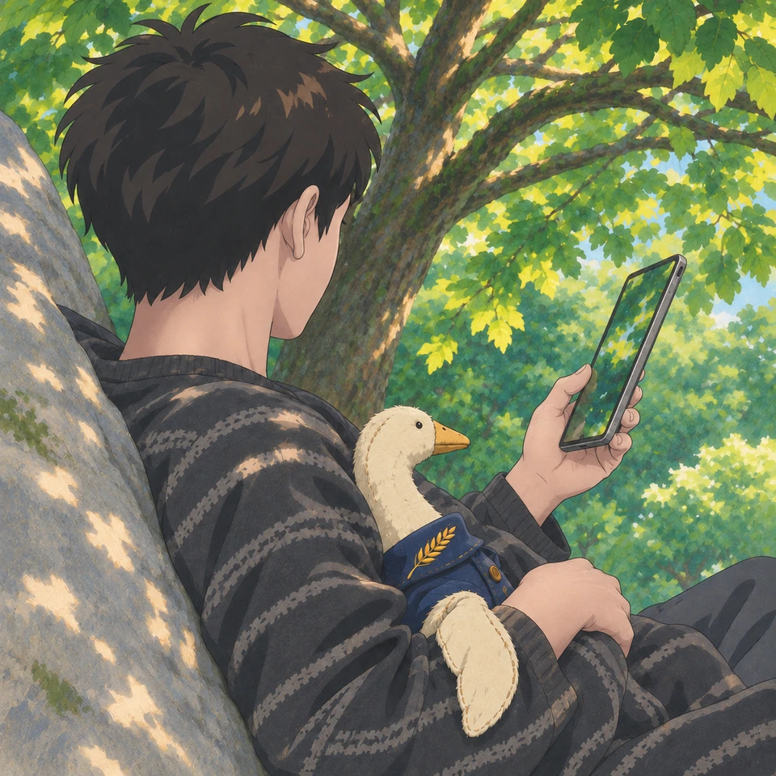

Hi, abandon
代码、笔记与开源实践这里记录我的技术学习、开发实践和生活随笔。平时写 Go 和 PHP，也在 Lean Code Box 做开源项目。

我写的文章↓
文章
博客停更的两年，写进了 GitHub
一个 AI 翻开 abandon1a2b 的旧博客，从 GooseForum、Rooster 和 Toonforge Studio 的提交记录里，读到那些尚未写成博文的开发日常。
2026年11月15日 · other
用 GitHub Actions 自动发布 Hexo 博客
本文是 github workflows 部署的第一篇 blog 。
2024年11月27日 · other用 Git Hook 在提交前更新文档目录
可以参考之前更改commit的逻辑。不过要注意，如果设置了全局 hooks , 项目内的就无法使用了
2024年11月13日 · otherJDK 8、11、17 命令行工具对照表
java8/java11/java17
2024年11月5日 · other为什么 Java 队列清空了，消费线程还在等？
之前一直用go写的多消费者，因为go存在channel，所以可以用有缓channel模拟队列进行消费和退出，但是java不存在channel，所以要是用一些内存queue，结果由于退出条件的判断不一样，导致java的代码进入空等待。一只没有释放资源。
2024年10月23日 · other用 Java 阻塞队列和线程池处理任务
java queue with thread
2024年8月29日 · other初识仓颉：安装 SDK，运行第一个程序
当前安装前置操作： 微信公众号搜索： 仓颉编程语言 , 回复 SDK。 注册gitcode账号。当前仓颉 SDK 相关自料在gitcode上。目前只有 SDK ，还没有源码放出。
2024年7月20日 · other我做的项目↓